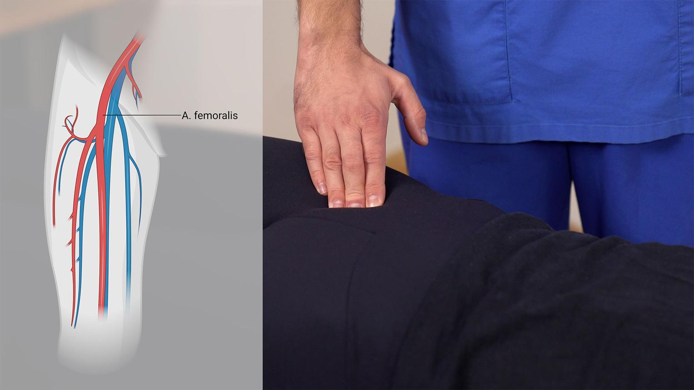
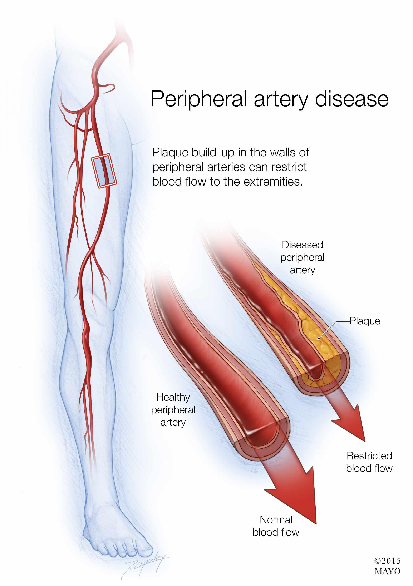
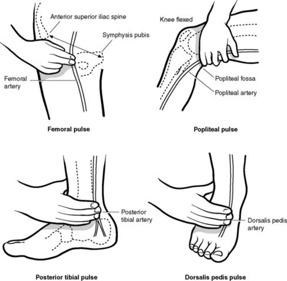
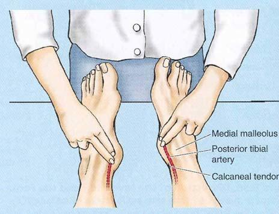
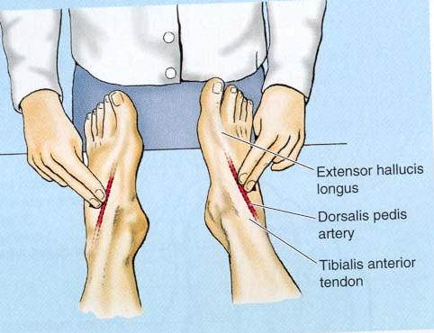

Pulso femoral

Ubicación: ingle, aproximadamente a mitad de camino entre la espina ilíaca anterior superior y el pubis.
Se palpa con las yemas de dos o tres dedos, aplicando presión suave hacia atrás.
Reducción del flujo sanguíneo hacia las extremidades.

Generalmente se debe a aterosclerosis en arterias de las piernas. El músculo recibe sangre suficiente en reposo, pero no durante el esfuerzo.
La claudicación intermitente: dolor, calambre o cansancio en pantorrilla, muslo o glúteo al caminar, que mejora al detenerse.
Incluye examen de pulsos y el índice tobillo-brazo, además de ecografía Doppler u otras imágenes cuando son necesarias.
El examen físico busca comprobar si la sangre llega correctamente a las piernas.

Ubicación: ingle, aproximadamente a mitad de camino entre la espina ilíaca anterior superior y el pubis.
Se palpa con las yemas de dos o tres dedos, aplicando presión suave hacia atrás.

Ubicación: centro de la parte posterior de la rodilla.
Suele ser más profundo y difícil de encontrar; la rodilla debe estar ligeramente flexionada.

Ubicación: detrás y un poco debajo del maléolo medial, en la cara interna del tobillo.
Se colocan los dedos entre el maléolo medial y el tendón de Aquiles.

Ubicación: dorso del pie, habitualmente lateral al tendón del dedo gordo.
Se palpa suavemente en el dorso del pie; puede variar de posición entre personas.
No es una palpación. Se mide con un manguito de presión arterial y un Doppler portátil para comparar la presión sistólica del tobillo con la del brazo.
| Fórmula | Interpretación |
|---|---|
| ITB = Presión sistólica del tobillo ÷ Presión sistólica del brazo | Compara cuánto disminuye la presión al llegar a la pierna. |
| Resultado | Significado |
|---|---|
| 1,00–1,30 | Normal. |
| 0,91–0,99 | Límite. |
| <0,90 | Sugiere enfermedad arterial periférica. |
| <0,40 | Enfermedad grave. |
La enfermedad arterial periférica suele ser consecuencia de la aterosclerosis. La prevención busca mantener un buen flujo sanguíneo hacia las piernas y evitar la progresión del estrechamiento arterial.
| Alimento | ¿Por qué ayuda? |
|---|---|
| Pescado azul | Aporta omega‑3. |
| Verduras y frutas | Antioxidantes y fibra. |
| Avena y legumbres | Ayudan a reducir LDL. |
| Aceite de oliva extra virgen | Favorece un perfil lipídico saludable. |
| Frutos secos sin sal | Grasas saludables y magnesio. |
Es la medida más importante.
Mejora la circulación y la distancia que puede caminar.
Disminuye la progresión de la enfermedad.
Detecta heridas antes de que se compliquen.
| Suplemento | Cuándo puede tener sentido | Precaución |
|---|---|---|
| Omega‑3 | Casos cardiovasculares seleccionados. | No reemplaza el tratamiento. |
| Magnesio | Déficit documentado. | El exceso puede ser perjudicial. |
| Vitamina D | Déficit demostrado. | No mejora la circulación por sí sola. |
| Coenzima Q10 | Casos seleccionados. | Evidencia limitada. |
| Hierro | Solo si existe anemia. | No suplementar sin indicación médica. |
Dejar de fumar, caminar de manera estructurada, controlar factores de riesgo y usar medicación indicada. En enfermedad grave puede requerirse revascularización.